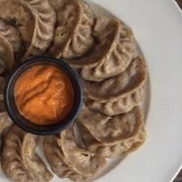

Loading...
Food Menu
Food Menu
Most Popular Items
.jpeg)
Suja (Bhutanese Butter Tea) Nu115
A rich tea made from butter, salt, and black tea leaves. It’s savory and warming, perfect for starting the day.Khuley $115
Buckwheat pancakes often served with butter or cheese. These are popular in the highlands, especially in places like Bumthang.Jaju Nu80
A light, milky soup made with turnip leaves, milk, and a touch of butter. It’s mild yet comforting.Puta NU100
Buckwheat noodles, usually stir-fried with light seasoning. Sometimes served with eggs or cheese..jpeg)
Thuep (Rice Porridge) NU100
A comforting rice porridge similar to congee, often seasoned with butter, salt, or light spices, and sometimes served with bits of meat or eggs..jpeg)
Meykang (Chili & Cheese Toast) NU100
A Bhutanese twist on toast, with chilies and cheese on thick slices of bread, sometimes topped with a dash of herbs.
Gondo Datshi Nu115
Scrambled eggs cooked with generous amounts of butter and cheese, making it a rich and creamy breakfast option.
Nyenka Tsirum NU100
Porridge made from cornmeal or roasted maize flour, providing a warm and filling start to the day..jpeg)
Ema Datshi (Chili Cheese) NU100
A famous Bhutanese dish with green chilies and cheese, often served with rice. It’s spicy and creamy, a must-have in Bhutanese cuisine!
Shakam Paa $110
Dried beef cooked with radish and lots of chilies. It’s savory, spicy, and pairs wonderfully with rice.
Red Rice NU110
Nutty Bhutanese red rice, which is a staple of every meal, with a unique earthy flavor.
Hogay Salad NU55
A refreshing salad made with cucumber, tomatoes, green chilies, onions, and a touch of Sichuan pepper for a slight numbing effect.Ezay NU35
A spicy Bhutanese chili sauce made with dried chilies, tomatoes, and Sichuan pepper—served as a side condiment for an extra kick!.jpeg)
Phaksha Paa (Pork with Red Chilies) NU125
Tender pork slices cooked with dried red chilies and radish. It’s savory, smoky, and a bit spicy, served best with rice.
Jaju Thukpa NU80
A noodle soup variation of the traditional jaju, enriched with turnip leaves, herbs, and butter for a heartier version..jpeg)
Gondo Pa (Chicken and Cheese Stir-Fry) NU115
Small pieces of chicken stir-fried with cheese, butter, and a few green chilies, creating a mildly spicy, cheesy dish..jpeg)
Jasha Maroo (Spicy Chicken Stew) NU115
A hearty, spicy chicken dish cooked with ginger, garlic, tomatoes, and chilies, served with rice.
Kewa Datshi NU115
Potatoes cooked in a rich cheese sauce with green chilies, a milder take on the datshi (cheese) tradition.
Momo NU50
Steamed dumplings filled with minced meat (beef, pork, or yak) or cheese and spinach. Often served with a spicy chili sauce.
Dessert – Zow Shungo NU50
A simple but lovely rice dish cooked with leftover rice, butter, and sugar, often with a dash of milk..jpeg)
Shamu Datshi (Mushroom and Cheese Stew) NU90
A datshi variation using mushrooms, green chilies, and cheese, creating a creamy and earthy dish that goes well with rice..jpeg)
Yaksha Shakam (Dried Yak Meat Stew) NU120
A stew made from dried yak meat, similar to beef jerky but with a unique yak flavor, cooked with spices and often radish or turnip.

Hoentay NU65
Similar to momo but specific to the Haa Valley, hoentay are buckwheat dumplings stuffed with turnip leaves, spinach, and cheese, often steamed or fried.